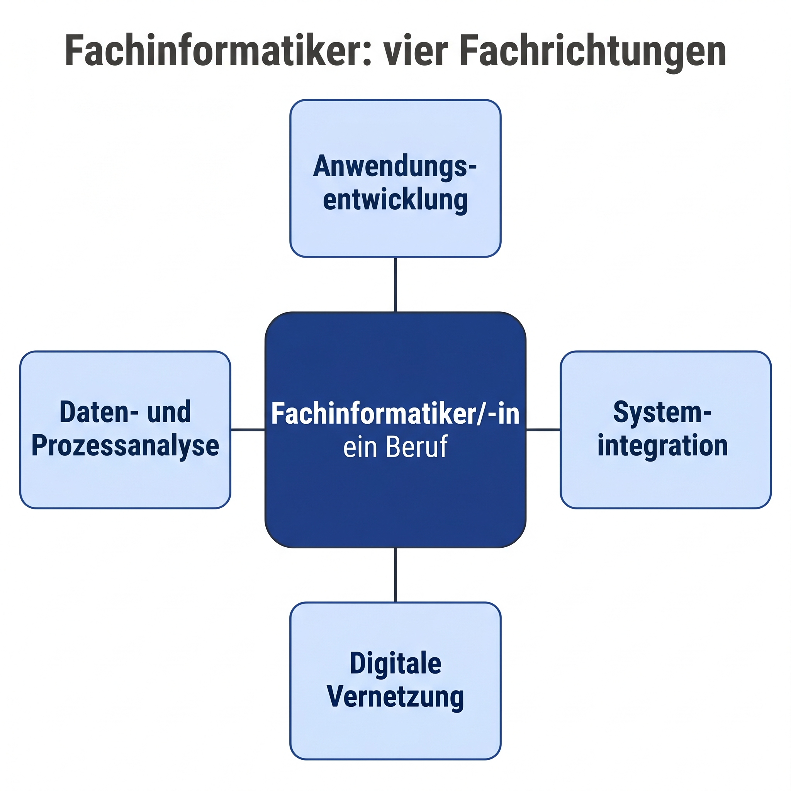
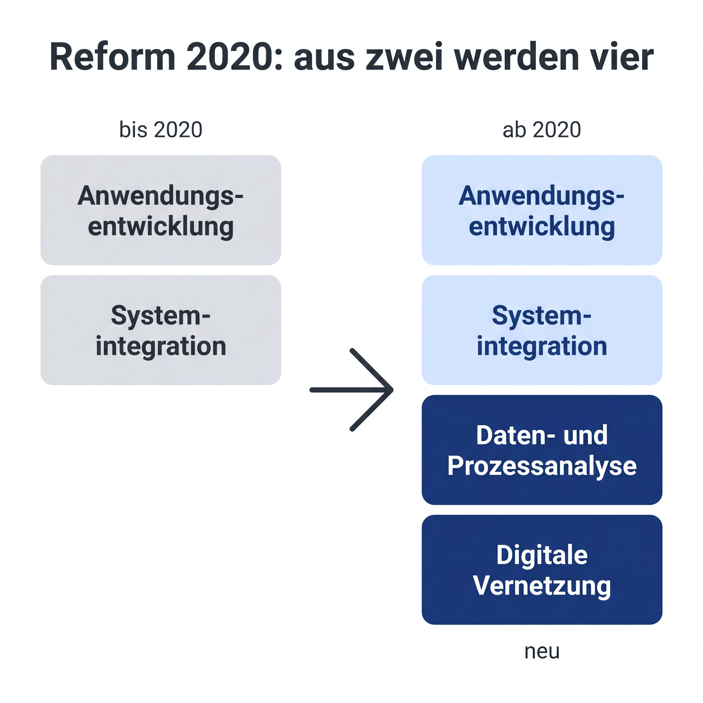
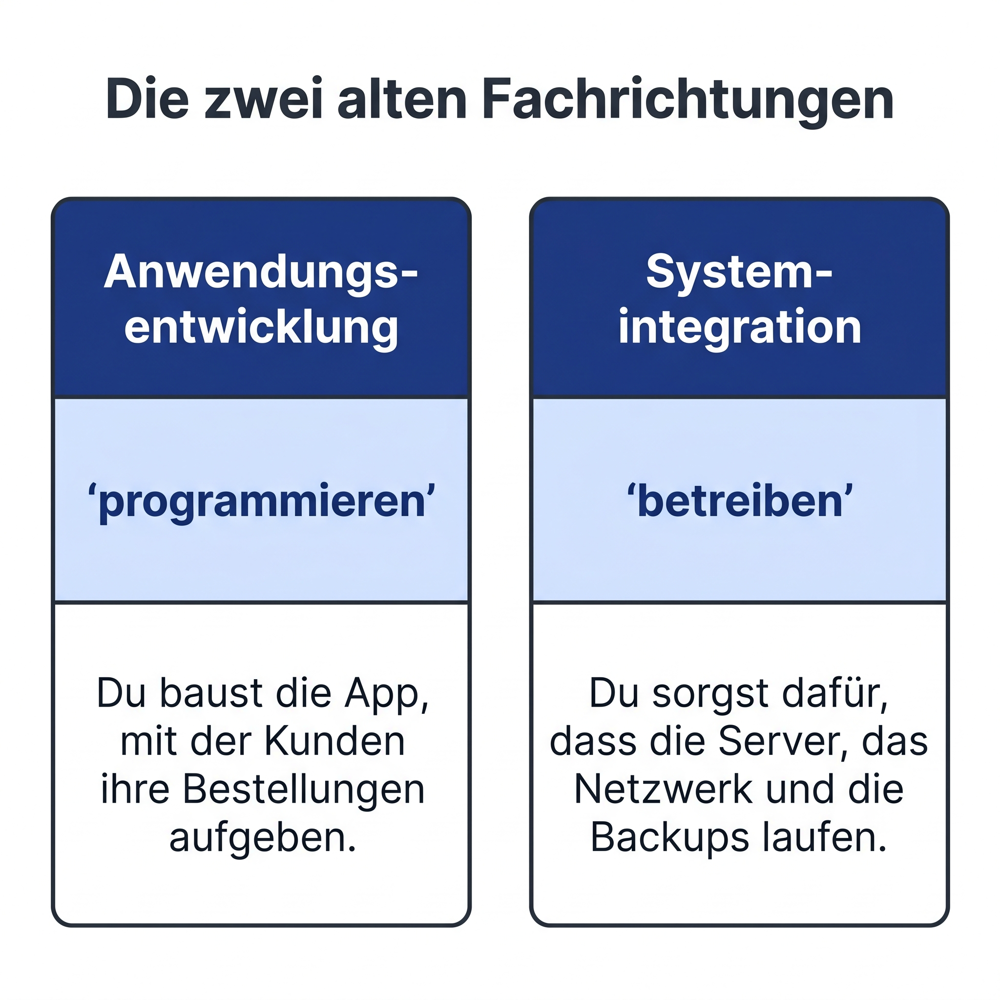
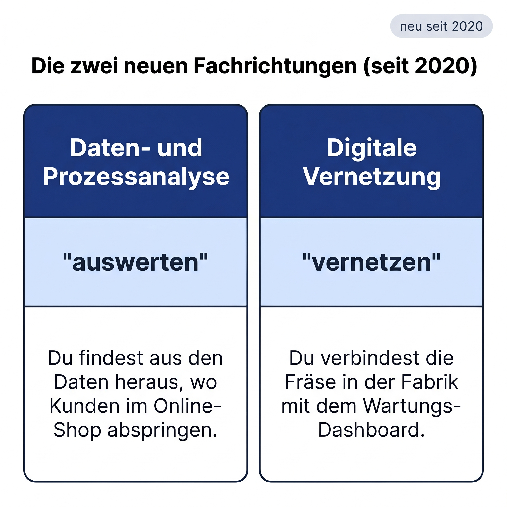
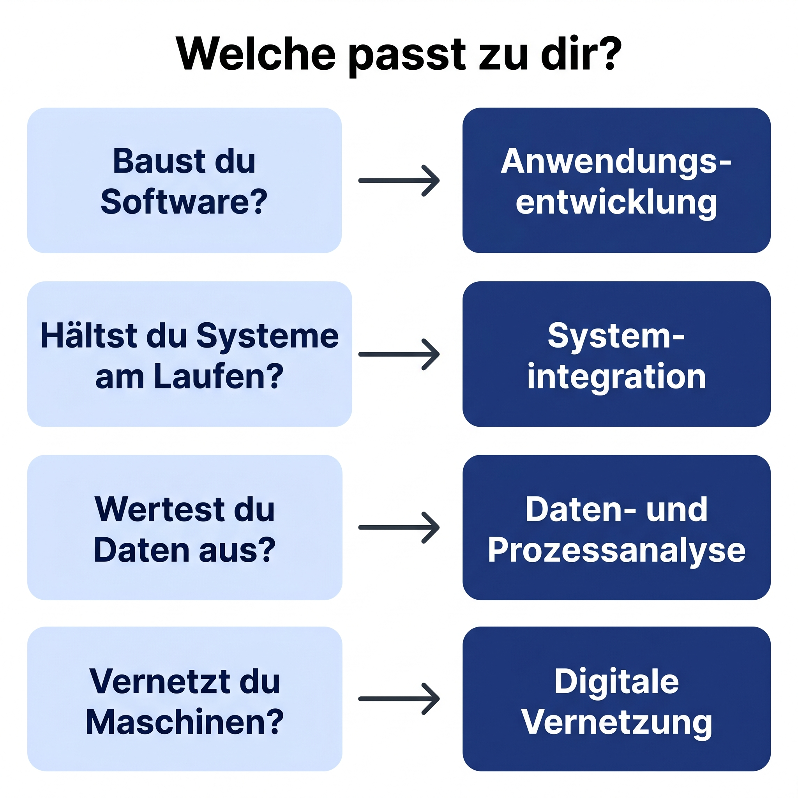
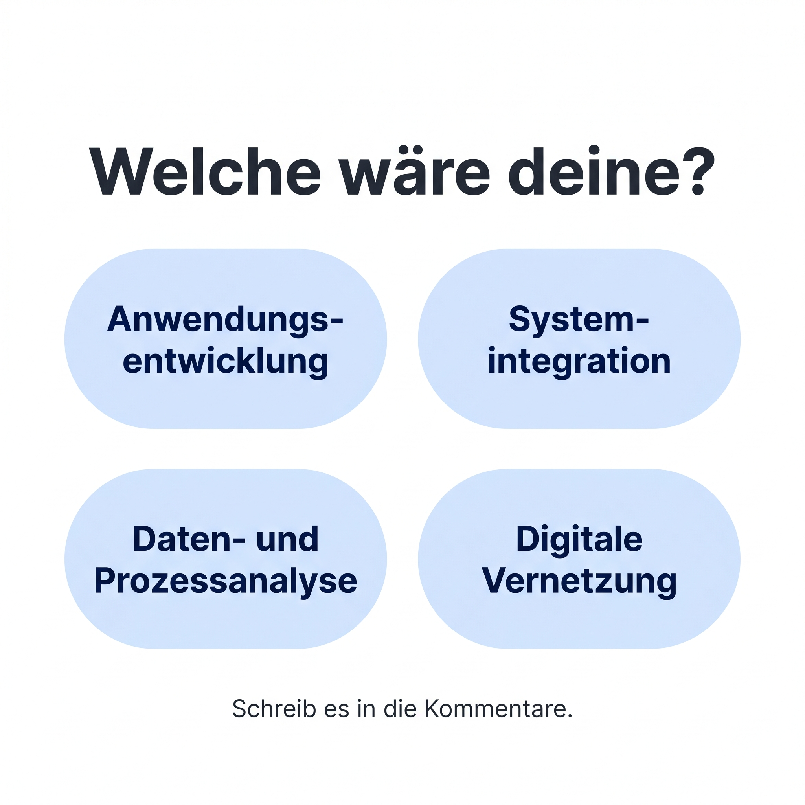

90 Sekunden, Bogen C (Vergleichs-Pattern), 6 Schaubilder. Anschluss an Video 02.

Fachinformatiker, das ist ein Beruf. Aber vier Fachrichtungen. Und du wählst eine davon, bevor du den Ausbildungsvertrag unterschreibst.
Korrekt ist: der Beruf heißt offiziell "Fachinformatiker/-in" (§ 1 FIAusbV). Die vier Fachrichtungen sind in § 4 Abs. 1 Nr. 2 der Verordnung festgelegt. Du wechselst sie nach Beginn nicht mehr ohne Weiteres.

Bis 2020 gab es nur zwei Fachrichtungen: Anwendungsentwicklung und Systemintegration. Seit August 2020 sind es vier. Neu dazugekommen: Daten- und Prozessanalyse und Digitale Vernetzung. Die größte IT-Berufsreform seit 1997.
Die Fachinformatikerausbildungsverordnung (FIAusbV) wurde am 28. Februar 2020 erlassen (BGBl. I 2020 S. 250) und trat am 1. August 2020 in Kraft. Die alte Verordnung war von 1997.

Die Anwendungsentwicklung ist der Klassiker für alle, die programmieren wollen. Du baust zum Beispiel die App, mit der die Kunden eines Online-Shops ihre Bestellungen aufgeben. Typische Sprachen: Java, C-Sharp, Python, TypeScript. Typische Arbeitgeber: Softwarefirmen, Versicherungen, Banken, jeder Mittelständler mit eigener IT-Abteilung.
Die Systemintegration sorgt dafür, dass die Server, das Netzwerk, die Backups und die Firewall laufen. Du installierst und konfigurierst IT-Systeme, baust Active Directory auf, monitorst alles, fixt es, wenn es kaputt geht. Typische Arbeitgeber: Systemhäuser, Rechenzentren, IT-Abteilungen in jeder Branche.
Verwechselungsgefahr mit dem IT-System-Elektroniker: der baut die Hardware und Stromversorgung physisch auf (Elektrotechnik-Anteil). Der Systemintegrator arbeitet eine Ebene darüber, also Betriebssystem, Netzwerk, Dienste.

Die Daten- und Prozessanalyse ist für alle, die mit Daten Geschäftsprozesse verbessern wollen. Du findest zum Beispiel aus Logfiles heraus, wo Kunden im Online-Shop den Bestellprozess abbrechen, und modellierst einen kürzeren Ablauf. Mathematik, Statistik, etwas Programmierung, plus Prozessdenken. Typische Arbeitgeber: Industrie, Handel, IT-Beratung.
Die Digitale Vernetzung baut die Brücke zwischen klassischer IT und Maschinen. Du verbindest zum Beispiel die Fräse in der Fabrik per Industrie-Protokoll mit dem Wartungs-Dashboard, damit Ausfälle vorhergesagt werden. Typische Arbeitgeber: Maschinenbau, Automobil-Zulieferer, Energiewirtschaft.
BIBB veröffentlicht keine Aufteilung der Neuabschlüsse pro Fachrichtung. Eine Indikation aus den Umschulungsprüfungen 2023 (BIBB-Datenreport, Tab B4.4-2): Systemintegration und Anwendungsentwicklung dominieren, die zwei neuen sind in den Top-Listen nicht enthalten, ihre Fallzahlen liegen also deutlich darunter. Reguläre Azubi-Zahlen pro Fachrichtung sind nur per destatis-Sonderauswertung erhältlich.

Also, wenn du dich entscheiden musst, frag dich vier Sachen. Baust du Software? Dann Anwendungsentwicklung. Hältst du Systeme am Laufen? Dann Systemintegration. Wertest du Daten aus? Dann Daten- und Prozessanalyse. Vernetzt du Maschinen? Dann Digitale Vernetzung.
Diese Leitfragen sind eine didaktische Vereinfachung, sie stehen so nicht in der FIAusbV oder bei BERUFENET. Eine offizielle Profil-Zuordnung der Form "geeignet für ..." gibt es nicht. Wer fundiert testen will: Check-U der Bundesagentur für Arbeit.

Welche wäre deine? Schreib es in die Kommentare. Im nächsten Video gehe ich tiefer in eine der vier rein, die mit den meisten Stimmen.
Bundesministerium der Justiz, Rechtsgrundlage
Bundesinstitut für Berufsbildung (BIBB)
Bundesagentur für Arbeit